Academic
Living Outside the Box
Caixa Social: modular housing and community in the hills of Rio
Rio de Janeiro, RJ, Brazil
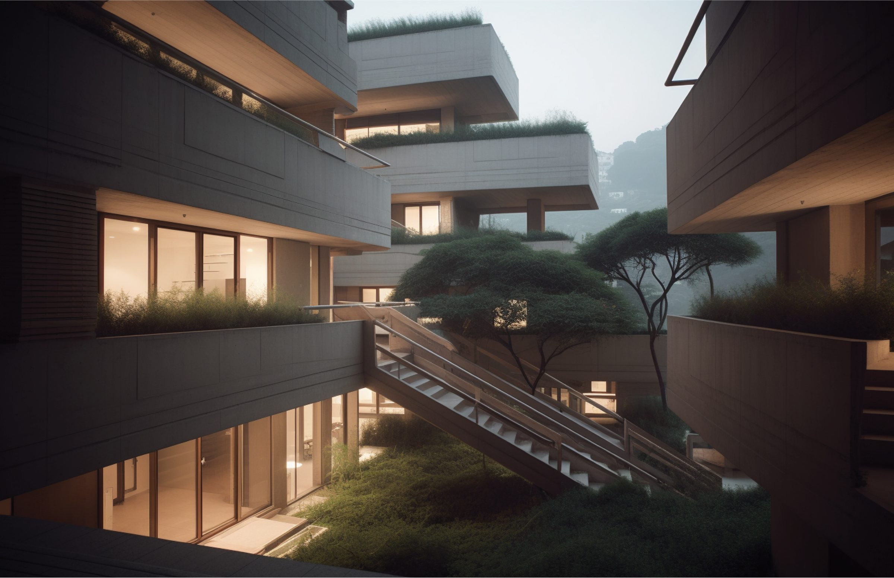
Overview
In the foothills of Rio de Janeiro’s Lagoa neighborhood, an area known for its tall high-rises set along and among the trees and mountains, Caixa Social reimagines contemporary housing and community building. Inspired by Moshe Safdie’s Habitat 67 in Montreal, Caixa creates a community in harmony with its ecology through modular units, which allow a highly customizable form that fits the needs of a population as diverse as Rio’s.
The Modern Community
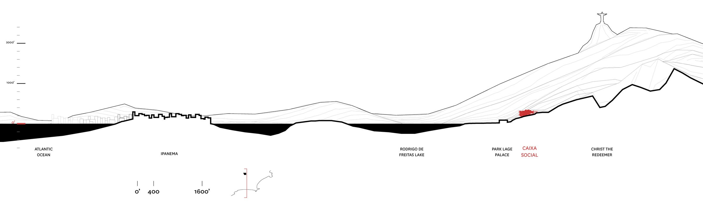
The Mountains of Rio
Caixa Social is nestled in one of Rio’s many scenic mountainsides. Located between Lagoa, just north of Copacabana, and beneath Christ the Redeemer, this spot is the quintessential “urban jungle”.
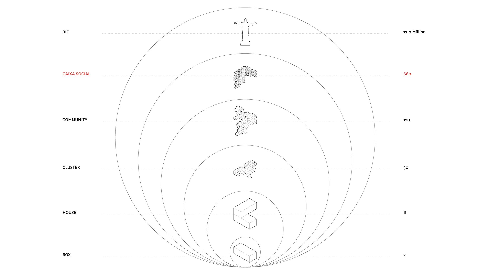
Caixa Social: The Social Box
Starting with the box — as a matter of fact, the walls of the box — each component of the Caixa is modular, repeated and additive. A box makes a room, two boxes make a house, five houses make a cluster, three clusters make a community, and so on.
Pre-Fab Modular Living
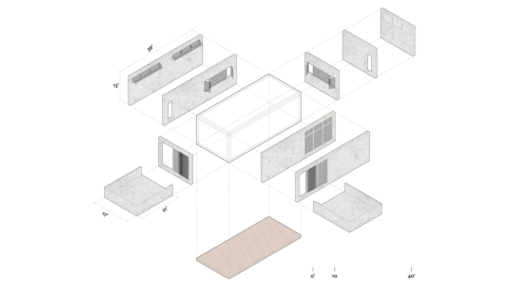
The Box
The box is the basic building unit for the entire Caixa Social. Each box is configured with different walls, windows, doors and vents depending on program, the size of the unit, and the box’s location.
Boxes are made of pre-fabricated concrete, which makes installation easier given the complex terrain and conditions. The structural walls and floors also allow for longer cantilevers, affording every resident at least one private outdoor space.
Units of Housing
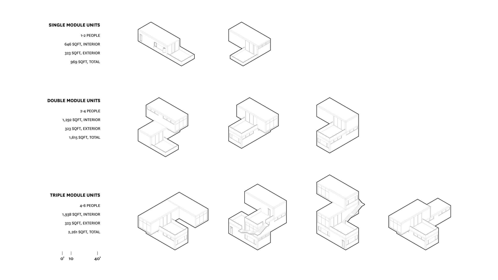
Typologies
There are (nearly) infinite ways to arrange boxes into units. These examples show unit types for a studio, a one-bedroom, and two- and three-bedroom units. Every unit, regardless of size, has at least one terrace or balcony.
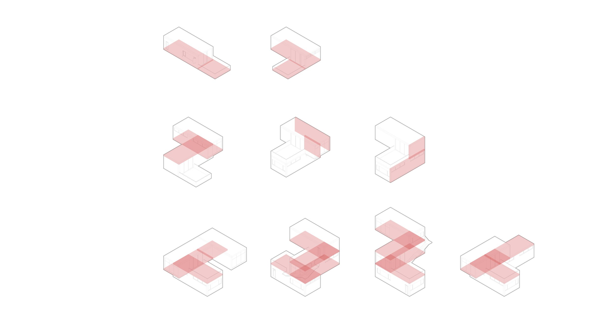
Structure
Units share walls and floor and ceiling plates, which strengthens the structure and gives more flexibility in form.
The Cluster
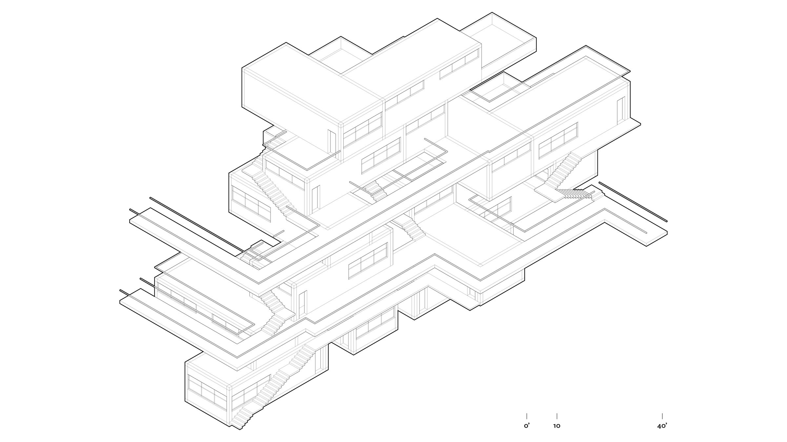
Community Building
Boxes come together to form units, and a small group of units creates a cluster. Each cluster has at least one public outdoor space per level of circulation. Circulation occurs once every three levels, which helps air movement and daylight, and creates large areas that open onto Caixa’s natural surroundings.
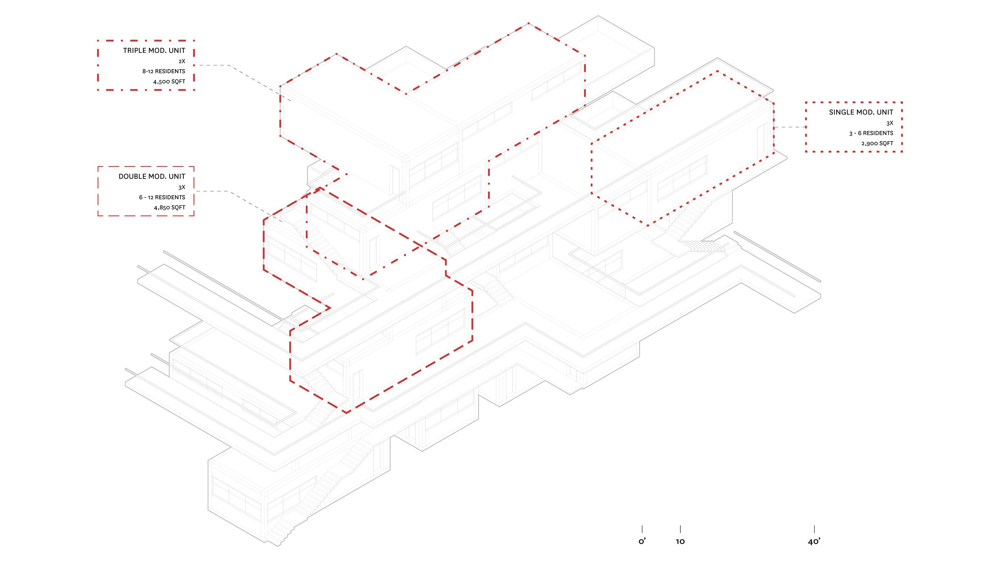
Living Indoors and Out
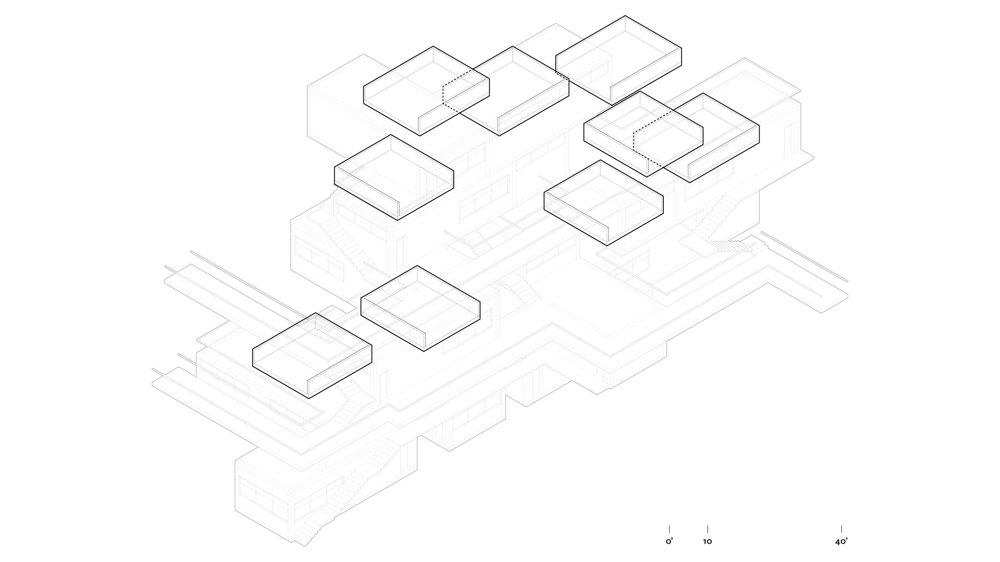
Creating Space
Nature, and a connection with it, is integral to Caixa’s design. As in Safdie’s Habitat, every resident has access to private and public outdoor space. Private space comes as terraces and balconies within each unit, regardless of size or location. Public outdoor spaces sit along the circulation paths and come in all shapes and sizes, covered and uncovered, depending on what a resident wants or needs in the moment.
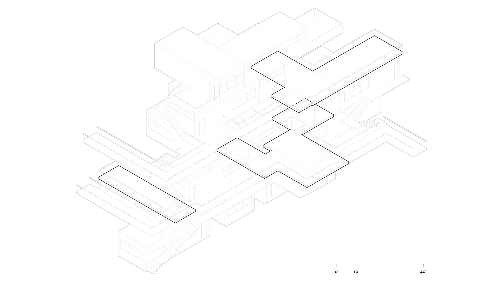
The Community
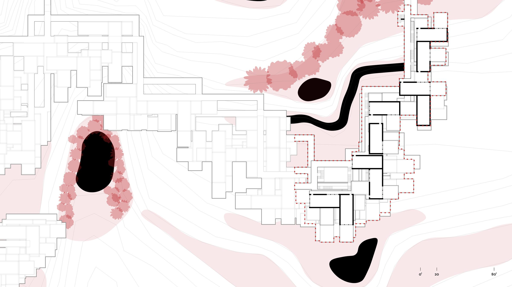
Caixa Social
Nestled into Rio de Janeiro’s hilly urban landscape, Caixa Social is a new approach to housing and community in a city unique for a vast urban fabric set beside its beaches, mountains and forests.
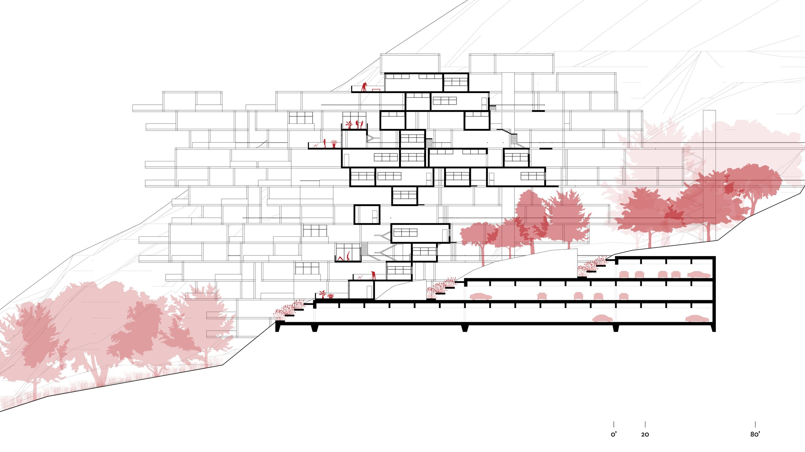
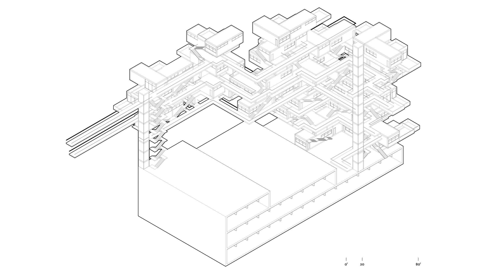